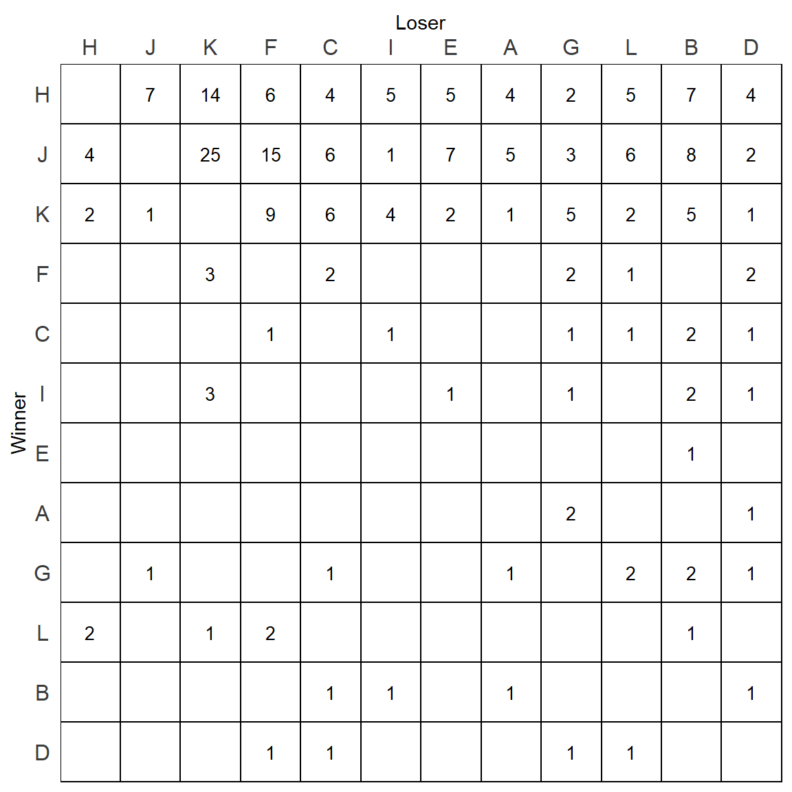

Chapter 3 Plotting Sociomatrices
This chapter describes in detail how we make our sociomatrices using the ggplot2 package.
We assume that you already have data in a sociomatrix. We will start with one such matrix - the mouse matrix that is available in the compete package.
# devtools::install_github('jalapic/compete')
library(compete)
mouse## A B C D E F G H I J K L
## A 0 0 0 1 0 0 2 0 0 0 0 0
## B 1 0 1 1 0 0 0 0 1 0 0 0
## C 0 2 0 1 0 1 1 0 1 0 0 1
## D 0 0 1 0 0 1 1 0 0 0 0 1
## E 0 1 0 0 0 0 0 0 0 0 0 0
## F 0 0 2 2 0 0 2 0 0 0 3 1
## G 1 2 1 1 0 0 0 0 0 1 0 2
## H 4 7 4 4 5 6 2 0 5 7 14 5
## I 0 2 0 1 1 0 1 0 0 0 3 0
## J 5 8 6 2 7 15 3 4 1 0 25 6
## K 1 5 6 1 2 9 5 2 4 1 0 2
## L 0 1 0 0 0 2 0 2 0 0 1 0These data are actually stored in a data.frame of 12 rows and 12 columns:
str(mouse)## 'data.frame': 12 obs. of 12 variables:
## $ A: int 0 1 0 0 0 0 1 4 0 5 ...
## $ B: int 0 0 2 0 1 0 2 7 2 8 ...
## $ C: int 0 1 0 1 0 2 1 4 0 6 ...
## $ D: int 1 1 1 0 0 2 1 4 1 2 ...
## $ E: int 0 0 0 0 0 0 0 5 1 7 ...
## $ F: int 0 0 1 1 0 0 0 6 0 15 ...
## $ G: int 2 0 1 1 0 2 0 2 1 3 ...
## $ H: int 0 0 0 0 0 0 0 0 0 4 ...
## $ I: int 0 1 1 0 0 0 0 5 0 1 ...
## $ J: int 0 0 0 0 0 0 1 7 0 0 ...
## $ K: int 0 0 0 0 0 3 0 14 3 25 ...
## $ L: int 0 0 1 1 0 1 2 5 0 6 ...3.1 Raw Sociomatrices
The first step we need to do is to convert the sociomatrix dataframe into long format data so we can give x and y coordinates. We can do this using the melt function from the reshape2 package. We ensure that this output is a data.frame using data.frame().
In case our diagonal had NA entries, we also only keep complete cases.
#make the df we will use for plotting
m.dat <- reshape2::melt(mouse)
m.dat <- data.frame(m.dat)
m.dat <- m.dat[complete.cases(m.dat),] #removing NAs
head(m.dat)## variable value
## 1 A 0
## 2 A 1
## 3 A 0
## 4 A 0
## 5 A 0
## 6 A 0tail(m.dat)## variable value
## 139 L 2
## 140 L 5
## 141 L 0
## 142 L 6
## 143 L 2
## 144 L 0This just gives 2 columns of output. A variable column which refers to the original column that the value entry came from. We need to add a new column that gives the row location. These are in the order A->L.
We could just add that column like this:
m.dat$row.id <- LETTERS[1:12]
head(m.dat)## variable value row.id
## 1 A 0 A
## 2 A 1 B
## 3 A 0 C
## 4 A 0 D
## 5 A 0 E
## 6 A 0 Ftail(m.dat)## variable value row.id
## 139 L 2 G
## 140 L 5 H
## 141 L 0 I
## 142 L 6 J
## 143 L 2 K
## 144 L 0 LAt this point, there are two main things that we should do before plotting. i) Decide whether to remove zeros - as sociomatrices generally look better without them in. ii) Reorder the ids by their dominance.
Let’s first make a very basic plot without doing either of these things.
We use geom_tile() from ggplot2 to make our plot, and use geom_text() to add in the value. The x axis should be the loser (column from original sociomatrix) and the y axis should be the winner (row from the original sociomatrix).
The parameters inside geom_tile() define the color, fill and size of each tile.
The parameter label= inside geom_text() define which column supplies the text. We also dictate the color and size of the text.
library(tidyverse)
p <- ggplot(m.dat, aes(x=variable, y=row.id)) +
geom_tile(color="black", size=0.5, stat="identity", fill='white') +
geom_text(aes(label = value), color="black", size=rel(3.5)) +
theme_classic()
pThere are a number of other things that are wrong with this plot. First, it is more readable to have the labels on the x-axis at the top of the plot. We can do this as follows, while also labeling the axes with new titles:
p <- p +
scale_x_discrete(expand = c(0, 0), position = "top") +
scale_y_discrete(expand = c(0, 0)) +
xlab("Loser") +
ylab("Winner")
pIt still isn’t quite right. We can adjust a number of other theme elements to make the plot look better:
p <- p +
theme(axis.text.x = element_text(vjust = 1),
axis.text.y = element_text(hjust = 0.5),
panel.grid.major = element_blank(),
panel.grid.minor = element_blank(),
panel.border = element_rect(fill=NA,color="black", size=0.5, linetype="solid"),
axis.line = element_blank(),
axis.ticks = element_blank(),
panel.background = element_rect(fill="white"),
plot.background = element_rect(fill="white"),
axis.text = element_text(color="#3C3C3C", size=rel(1.1)),
legend.position = "none"
)
pThis looks better, but it still has three issues. The ids are in alphabetical order as opposed to being in dominance order. The matrix is full of zeros which make it harder to read. Finally, all tiles are filled with white, when it would be more readable to fill with a color that depicts the value of the cell/tile.
Let’s first remove the zeros. This should be done when we create the data.frame after melting. We substitute zeros with NAs.
m.dat[m.dat == 0] <- NA
head(m.dat)## variable value row.id
## 1 A NA A
## 2 A 1 B
## 3 A NA C
## 4 A NA D
## 5 A NA E
## 6 A NA Ftail(m.dat)## variable value row.id
## 139 L 2 G
## 140 L 5 H
## 141 L NA I
## 142 L 6 J
## 143 L 2 K
## 144 L NA LWe can now replot using the same plotting code as above:
p <- ggplot(m.dat, aes(x=variable, y=row.id)) +
geom_tile(color="black", size=0.5, stat="identity", fill='white') +
geom_text(aes(label = value), color="black", size=rel(3.5)) +
theme_classic() +
scale_x_discrete(expand = c(0, 0), position = "top") +
scale_y_discrete(expand = c(0, 0)) +
xlab("Loser") +
ylab("Winner") +
theme(axis.text.x = element_text(vjust = 1),
axis.text.y = element_text(hjust = 0.5),
panel.grid.major = element_blank(),
panel.grid.minor = element_blank(),
panel.border = element_rect(fill=NA,color="black", size=0.5, linetype="solid"),
axis.line = element_blank(),
axis.ticks = element_blank(),
panel.background = element_rect(fill="white"),
plot.background = element_rect(fill="white"),
axis.text = element_text(color="#3C3C3C", size=rel(1.1)),
legend.position = "none"
)
pReordering the order of individuals on the rows and columns requires a bit more thought. The best way to reorder would be based on some measure of dominance. For this example, we are going to choose to reorder the ids based on David’s Scores. We could pick other ranking methods though such as I&SI.
To reorder by David’s Scores, we first must calculate the David’s Scores of each individual. We will use the ds function from the compete package:
v <- ds(mouse)
v## A B C D E F G
## -7.50702839 -20.20524267 -8.08154762 -16.11250000 -7.58202839 -4.25514347 -9.33750000
## H I J K L
## 36.78053221 -0.06417125 34.27341270 13.91740735 -11.82619048We can reorder this vector and grab the names in descending order:
v1 <- rev(names(v)[order(v)])
v1## [1] "H" "J" "K" "I" "F" "A" "E" "C" "G" "L" "D" "B"Now we have the order of individuals by their dominance. We can factorize our two columns containing the individual ids and set their levels. We actually have to make the levels of the winners the reverse order.
m.dat$variable <- factor(m.dat$variable, levels=v1)
m.dat$row.id <- factor(m.dat$row.id, levels = rev(v1))
str(m.dat)## 'data.frame': 144 obs. of 3 variables:
## $ variable: Factor w/ 12 levels "H","J","K","I",..: 6 6 6 6 6 6 6 6 6 6 ...
## $ value : int NA 1 NA NA NA NA 1 4 NA 5 ...
## $ row.id : Factor w/ 12 levels "B","D","L","G",..: 7 1 5 2 6 8 4 12 9 11 ...We can now replot the sociomatrix with the order of the ids now set:
p <- ggplot(m.dat, aes(x=variable, y=row.id)) +
geom_tile(color="black", size=0.5, stat="identity", fill='white') +
geom_text(aes(label = value), color="black", size=rel(3.5)) +
theme_classic() +
scale_x_discrete(expand = c(0, 0), position = "top") +
scale_y_discrete(expand = c(0, 0)) +
xlab("Loser") +
ylab("Winner") +
theme(axis.text.x = element_text(vjust = 1),
axis.text.y = element_text(hjust = 0.5),
panel.grid.major = element_blank(),
panel.grid.minor = element_blank(),
panel.border = element_rect(fill=NA,color="black", size=0.5, linetype="solid"),
axis.line = element_blank(),
axis.ticks = element_blank(),
panel.background = element_rect(fill="white"),
plot.background = element_rect(fill="white"),
axis.text = element_text(color="#3C3C3C", size=rel(1.1)),
legend.position = "none"
)
pDavid’s Scores are a quick way of determining rank, but let’s instead go with the more formal I&SI rankings. We can calculate these using the isi98 function in the compete package:
isi <- isi98(mouse)##
## INITIAL RANK:
## [1] "H" "J" "K" "I" "F" "A" "E" "C" "G" "L" "D" "B"
## I = 5
## SI = 17isi## $best_matrix
## H J K F C I E A G L B D
## H 0 7 14 6 4 5 5 4 2 5 7 4
## J 4 0 25 15 6 1 7 5 3 6 8 2
## K 2 1 0 9 6 4 2 1 5 2 5 1
## F 0 0 3 0 2 0 0 0 2 1 0 2
## C 0 0 0 1 0 1 0 0 1 1 2 1
## I 0 0 3 0 0 0 1 0 1 0 2 1
## E 0 0 0 0 0 0 0 0 0 0 1 0
## A 0 0 0 0 0 0 0 0 2 0 0 1
## G 0 1 0 0 1 0 0 1 0 2 2 1
## L 2 0 1 2 0 0 0 0 0 0 1 0
## B 0 0 0 0 1 1 0 1 0 0 0 1
## D 0 0 0 1 1 0 0 0 1 1 0 0
##
## $best_order
## [1] "H" "J" "K" "F" "C" "I" "E" "A" "G" "L" "B" "D"
##
## $I
## [1] 3
##
## $SI
## [1] 11
##
## $rs
## [1] 0.9300699
We can graph the dominance rankings directly from the $best_order output.
It’s noticeable that this order differs quite a bit from the David’s Scores rankings:
isi$best_order## [1] "H" "J" "K" "F" "C" "I" "E" "A" "G" "L" "B" "D"v1## [1] "H" "J" "K" "I" "F" "A" "E" "C" "G" "L" "D" "B"We will then refactor our two columns based on these rankings.
m.dat$variable <- factor(m.dat$variable, levels=isi$best_order)
m.dat$row.id <- factor(m.dat$row.id, levels = rev(isi$best_order))
str(m.dat)## 'data.frame': 144 obs. of 3 variables:
## $ variable: Factor w/ 12 levels "H","J","K","F",..: 8 8 8 8 8 8 8 8 8 8 ...
## $ value : int NA 1 NA NA NA NA 1 4 NA 5 ...
## $ row.id : Factor w/ 12 levels "D","B","L","G",..: 5 2 8 1 6 9 4 12 7 11 ...And we can replot the matrix based on this order
p <- ggplot(m.dat, aes(x=variable, y=row.id)) +
geom_tile(color="black", size=0.5, stat="identity", fill='white') +
geom_text(aes(label = value), color="black", size=rel(3.5)) +
theme_classic() +
scale_x_discrete(expand = c(0, 0), position = "top") +
scale_y_discrete(expand = c(0, 0)) +
xlab("Loser") +
ylab("Winner") +
theme(axis.text.x = element_text(vjust = 1),
axis.text.y = element_text(hjust = 0.5),
panel.grid.major = element_blank(),
panel.grid.minor = element_blank(),
panel.border = element_rect(fill=NA,color="black", size=0.5, linetype="solid"),
axis.line = element_blank(),
axis.ticks = element_blank(),
panel.background = element_rect(fill="white"),
plot.background = element_rect(fill="white"),
axis.text = element_text(color="#3C3C3C", size=rel(1.1)),
legend.position = "none"
)
p
This now is starting to look like a proper sociomatrix. There are however quite a few numbers under the diagonal. It’s not immediately obvious which numbers are inconsistencies - i.e. when the individual in the row is a winner over the individual in the column. For instance, L beats F 2 times, whereas F beats L 1 time only. Therefore this is an inconsistent relationship. However, L beats H 2 times, but H beats L 5 times, so this is not inconsistent.
One way we could fill these tiles would just be based on the value of the cell. This can be done using scale_fill_gradient(). To this we need to supply a fill color for the lowest value (which is actually 1 not 0 as we removed them) and a fill color for the highest value. We also need to add fill=value inside the ggplot() function - we also remove fill="white" from the geom_tile() function.
p <- ggplot(m.dat, aes(x=variable, y=row.id, fill=value)) +
geom_tile(color="black", size=0.5, stat="identity") +
geom_text(aes(label = value), color="black", size=rel(3.5)) +
theme_classic() +
scale_x_discrete(expand = c(0, 0), position = "top") +
scale_y_discrete(expand = c(0, 0)) +
xlab("Loser") +
ylab("Winner") +
theme(axis.text.x = element_text(vjust = 1),
axis.text.y = element_text(hjust = 0.5),
panel.grid.major = element_blank(),
panel.grid.minor = element_blank(),
panel.border = element_rect(fill=NA,color="black", size=0.5, linetype="solid"),
axis.line = element_blank(),
axis.ticks = element_blank(),
panel.background = element_rect(fill="white"),
plot.background = element_rect(fill="white"),
axis.text = element_text(color="#3C3C3C", size=rel(1.1)),
legend.position = "none"
) +
scale_fill_gradient(
low = "white",
high = "red1",
space = "Lab",
na.value = "white",
guide = "colourbar")
p This looks ok, but the shading is heavily skewed by the highest value. One alternatively strategy would be to log the value column, and supply that information as the new fill value. To do this, we would add a new column to the data.frame.
m.dat$value_log <- log(m.dat$value)
p <- ggplot(m.dat, aes(x=variable, y=row.id, fill=value_log)) +
geom_tile(color="black", size=0.5, stat="identity") +
geom_text(aes(label = value), color="black", size=rel(3.5)) +
theme_classic() +
scale_x_discrete(expand = c(0, 0), position = "top") +
scale_y_discrete(expand = c(0, 0)) +
xlab("Loser") +
ylab("Winner") +
theme(axis.text.x = element_text(vjust = 1),
axis.text.y = element_text(hjust = 0.5),
panel.grid.major = element_blank(),
panel.grid.minor = element_blank(),
panel.border = element_rect(fill=NA,color="black", size=0.5, linetype="solid"),
axis.line = element_blank(),
axis.ticks = element_blank(),
panel.background = element_rect(fill="white"),
plot.background = element_rect(fill="white"),
axis.text = element_text(color="#3C3C3C", size=rel(1.1)),
legend.position = "none"
) +
scale_fill_gradient(
low = "white",
high = "red1",
space = "Lab",
na.value = "white",
guide = "colourbar")
p This looks a bit better.
Another way to represent the relationships is by filling the tile with a shade of color that represents the directional consistency of each relationship.
We can do that by adding a new column to the data.frame which represents the directional consistency of each measure. We can calculate this directly from the original matrix.
dcs <- mouse / (mouse + t(mouse))
m.dat$DC <- reshape2::melt(dcs)[,2]
head(m.dat)## variable value row.id value_log DC
## 1 A NA A NA NaN
## 2 A 1 B 0 1
## 3 A NA C NA NaN
## 4 A NA D NA 0
## 5 A NA E NA NaN
## 6 A NA F NA NaNtail(m.dat)## variable value row.id value_log DC
## 139 L 2 G 0.6931472 1.0000000
## 140 L 5 H 1.6094379 0.7142857
## 141 L NA I NA NaN
## 142 L 6 J 1.7917595 1.0000000
## 143 L 2 K 0.6931472 0.6666667
## 144 L NA L NA NaNNow we can plot based on this measure:
p <- ggplot(m.dat, aes(x=variable, y=row.id, fill=DC)) +
geom_tile(color="black", size=0.5, stat="identity") +
geom_text(aes(label = value), color="black", size=rel(3.5)) +
theme_classic() +
scale_x_discrete(expand = c(0, 0), position = "top") +
scale_y_discrete(expand = c(0, 0)) +
xlab("Loser") +
ylab("Winner") +
theme(axis.text.x = element_text(vjust = 1),
axis.text.y = element_text(hjust = 0.5),
panel.grid.major = element_blank(),
panel.grid.minor = element_blank(),
panel.border = element_rect(fill=NA,color="black", size=0.5, linetype="solid"),
axis.line = element_blank(),
axis.ticks = element_blank(),
panel.background = element_rect(fill="white"),
plot.background = element_rect(fill="white"),
axis.text = element_text(color="#3C3C3C", size=rel(1.1)),
legend.position = "none"
) +
scale_fill_gradient(
low = "white",
high = "red1",
space = "Lab",
na.value = "white",
guide = "colourbar")
p Except this looks confusing. It would be better only to color the tiles when the animal is dominant and exclude those who are not.
We can check for each pair of individuals which has the highest directional consistency by checking the matrix of directional consistencies against its transpose. We then assign a NA to any cell that is not greater than its transpose:
dcs[dcs<=t(dcs)]<-NA
dcs## A B C D E F G H I J K
## A NaN NA NaN 1.0000000 NaN NaN 0.6666667 NA NaN NA NA
## B 1 NaN NA 1.0000000 NA NaN NA NA NA NA NA
## C NaN 0.6666667 NaN NA NaN NA NA NA 1.0000000 NA NA
## D NA NA NA NaN NaN NA NA NA NA NA NA
## E NaN 1.0000000 NaN NaN NaN NaN NaN NA NA NA NA
## F NaN NaN 0.6666667 0.6666667 NaN NaN 1.0000000 NA NaN NA NA
## G NA 1.0000000 NA NA NaN NA NaN NA NA NA NA
## H 1 1.0000000 1.0000000 1.0000000 1 1.0000000 1.0000000 NaN 1.0000000 0.6363636 0.8750000
## I NaN 0.6666667 NA 1.0000000 1 NaN 1.0000000 NA NaN NA NA
## J 1 1.0000000 1.0000000 1.0000000 1 1.0000000 0.7500000 NA 1.0000000 NaN 0.9615385
## K 1 1.0000000 1.0000000 1.0000000 1 0.7500000 1.0000000 NA 0.5714286 NA NaN
## L NaN 1.0000000 NA NA NaN 0.6666667 NA NA NaN NA NA
## L
## A NaN
## B NA
## C 1.0000000
## D 1.0000000
## E NaN
## F NA
## G 1.0000000
## H 0.7142857
## I NaN
## J 1.0000000
## K 0.6666667
## L NaNWe now can melt this matrix to provide the new fill values of directional consistency and use those for plotting:
m.dat$DC1 <- reshape2::melt(dcs)[,2] # only need 2nd column of melt output
p <- ggplot(m.dat, aes(x=variable, y=row.id, fill=DC1)) +
geom_tile(color="black", size=0.5, stat="identity") +
geom_text(aes(label = value), color="black", size=rel(3.5)) +
theme_classic() +
scale_x_discrete(expand = c(0, 0), position = "top") +
scale_y_discrete(expand = c(0, 0)) +
xlab("Loser") +
ylab("Winner") +
theme(axis.text.x = element_text(vjust = 1),
axis.text.y = element_text(hjust = 0.5),
panel.grid.major = element_blank(),
panel.grid.minor = element_blank(),
panel.border = element_rect(fill=NA,color="black", size=0.5, linetype="solid"),
axis.line = element_blank(),
axis.ticks = element_blank(),
panel.background = element_rect(fill="white"),
plot.background = element_rect(fill="white"),
axis.text = element_text(color="#3C3C3C", size=rel(1.1)),
legend.position = "none"
) +
scale_fill_gradient(
low = "white",
high = "red1",
space = "Lab",
na.value = "white",
guide = "colourbar")
p But wait, there is actually however one mistake with this plot. Remeber that scale_fill_manual() fills the colors of the plot from lowest to highest, making the lowest equal to “white”. As we plotted the above plot based on DC1column which was only keeping the highest directional consistency value for each relationship, that means one of these “high” DC values is still the “lowest” in that column. We can find it:
min(m.dat$DC1,na.rm=T)## [1] 0.5714286which(m.dat$DC1 == min(m.dat$DC1,na.rm=T))## [1] 107m.dat[107,] # I vs K## variable value row.id value_log DC DC1
## 107 I 4 K 1.386294 0.5714286 0.5714286It turns out that K beat I 4 times, and I beat K 3 times - giving K a directional consistency of 0.57 over I. When looking at the above plot, you will notice that the tile in the row of K and column of I which has a 4 in it is white. Technically, this should be a very pale red color.
How do we fix this ?
Essentially we need to put some DC values back into this column. But we need to choose wisely. Should we pick a value of 0? This then might skew the range of colors, although DC does vary between 0 and 1. Alternatively, we could pick 0.5 as we are only interested in looking at the higher DC values.
In this example, I’ll pick 0.5 as the cutoff value. What we should do is replace and NA values in the DC1 column with 0.5
m.dat$DC1 <- ifelse(is.na(m.dat$DC1), 0.5, m.dat$DC1)
tail(m.dat)## variable value row.id value_log DC DC1
## 139 L 2 G 0.6931472 1.0000000 1.0000000
## 140 L 5 H 1.6094379 0.7142857 0.7142857
## 141 L NA I NA NaN 0.5000000
## 142 L 6 J 1.7917595 1.0000000 1.0000000
## 143 L 2 K 0.6931472 0.6666667 0.6666667
## 144 L NA L NA NaN 0.5000000Now, let’s replot:
p <- ggplot(m.dat, aes(x=variable, y=row.id, fill=DC1)) +
geom_tile(color="black", size=0.5, stat="identity") +
geom_text(aes(label = value), color="black", size=rel(3.5)) +
theme_classic() +
scale_x_discrete(expand = c(0, 0), position = "top") +
scale_y_discrete(expand = c(0, 0)) +
xlab("Loser") +
ylab("Winner") +
theme(axis.text.x = element_text(vjust = 1),
axis.text.y = element_text(hjust = 0.5),
panel.grid.major = element_blank(),
panel.grid.minor = element_blank(),
panel.border = element_rect(fill=NA,color="black", size=0.5, linetype="solid"),
axis.line = element_blank(),
axis.ticks = element_blank(),
panel.background = element_rect(fill="white"),
plot.background = element_rect(fill="white"),
axis.text = element_text(color="#3C3C3C", size=rel(1.1)),
legend.position = "none"
) +
scale_fill_gradient(
low = "white",
high = "red1",
space = "Lab",
na.value = "white",
guide = "colourbar")
p Notice that now the tile K-I with a 4 in it is now filled with color, but all the others that should be white are still white.
3.2 Dichotomized Sociomatrices
We can plot dichotomized sociomatrices in two ways. The first would be to use the function get_di_matrix() from the compete package to generate a dichotomized matrix. We would then go through similar steps as above.
This is the dichotomized matrix:
get_di_matrix(mouse)## A B C D E F G H I J K L
## A 0 0 0 1 0 0 1 0 0 0 0 0
## B 1 0 0 1 0 0 0 0 0 0 0 0
## C 0 1 0 0 0 0 0 0 1 0 0 1
## D 0 0 0 0 0 0 0 0 0 0 0 1
## E 0 1 0 0 0 0 0 0 0 0 0 0
## F 0 0 1 1 0 0 1 0 0 0 0 0
## G 0 1 0 0 0 0 0 0 0 0 0 1
## H 1 1 1 1 1 1 1 0 1 1 1 1
## I 0 1 0 1 1 0 1 0 0 0 0 0
## J 1 1 1 1 1 1 1 0 1 0 1 1
## K 1 1 1 1 1 1 1 0 1 0 0 1
## L 0 1 0 0 0 1 0 0 0 0 0 0Alternatively, if we have already gone through the above steps, we can simply piggy-back on the plot we just made based on the directional consistency. In this plot, the only tiles that receive a color are those with a directional consistency above 0.5, which is exactly what we want for a dichotomized matrix. All we need to do is replace the text values. We no longer want the raw values, but a 1 if their directional consistency is above 0.5.
All we need to do is create a new value column and populate with 1s when the DC > 0.5 using an ifelse() statement:
m.dat$value1 <- ifelse(m.dat$DC1>.5, 1, NA)We can then replot putting in this new text:
p <- ggplot(m.dat, aes(x=variable, y=row.id, fill=DC1)) +
geom_tile(color="black", size=0.5, stat="identity") +
geom_text(aes(label = value1), color="black", size=rel(3.5)) +
theme_classic() +
scale_x_discrete(expand = c(0, 0), position = "top") +
scale_y_discrete(expand = c(0, 0)) +
xlab("Loser") +
ylab("Winner") +
theme(axis.text.x = element_text(vjust = 1),
axis.text.y = element_text(hjust = 0.5),
panel.grid.major = element_blank(),
panel.grid.minor = element_blank(),
panel.border = element_rect(fill=NA,color="black", size=0.5, linetype="solid"),
axis.line = element_blank(),
axis.ticks = element_blank(),
panel.background = element_rect(fill="white"),
plot.background = element_rect(fill="white"),
axis.text = element_text(color="#3C3C3C", size=rel(1.1)),
legend.position = "none"
) +
scale_fill_gradient(
low = "white",
high = "red1",
space = "Lab",
na.value = "white",
guide = "colourbar")
p 3.3 Multiple Sociomatrices
If we want to plot multiple sociomatrices we need to consider how to color the tiles.
As an example here are some data that have three groups of four mice:
df <- read_csv("https://gist.githubusercontent.com/jalapic/98d09d5c98e28276e81d3bc3de3e3832/raw/2175e26485d5b9790c7ef48bf14f94a96e16a4b9/threegroups.csv")
head(df)## # A tibble: 6 x 4
## Group id1 id2 value
## <dbl> <chr> <chr> <dbl>
## 1 1 A A 0
## 2 1 A B 15
## 3 1 A C 11
## 4 1 A D 8
## 5 1 B A 3
## 6 1 B B 0tail(df)## # A tibble: 6 x 4
## Group id1 id2 value
## <dbl> <chr> <chr> <dbl>
## 1 3 C C 0
## 2 3 C D 7
## 3 3 D A 2
## 4 3 D B 4
## 5 3 D C 4
## 6 3 D D 0We can look at the win-loss matrices from each of these three groups:
mats <- split(df, df$Group) %>%
map(~ reshape2::acast(., id1~id2, value.var="value"))
mats## $`1`
## A B C D
## A 0 15 11 8
## B 3 0 4 2
## C 0 0 0 1
## D 0 0 0 0
##
## $`2`
## A B C D
## A 0 0 0 1
## B 2 0 1 1
## C 4 6 0 3
## D 4 5 2 0
##
## $`3`
## A B C D
## A 0 3 0 5
## B 33 0 24 7
## C 11 3 0 7
## D 2 4 4 0One approach would be to create three separate matrices and plot them side by side. Let’s first create a plotting function that will color the tiles by the number of wins in each matrix. Then we’ll apply that function to each of the three groups separately.
Here is the function:
make_plot <- function(mat){
# Although plotting by value, adding in code that would enable filling by DC
# melt matrix back to df
m.dat <- reshape2::melt(mat)
m.dat <- data.frame(m.dat)
m.dat <- m.dat[complete.cases(m.dat),] #removing NAs
# remove 0s from value column
m.dat$value <- ifelse(m.dat$value==0, NA, m.dat$value)
# factorize ids by rank order
isi <- isi98(mat)
m.dat$Var2 <- factor(m.dat$Var2, levels=isi$best_order)
m.dat$Var1 <- factor(m.dat$Var1, levels = rev(isi$best_order))
# create directional consistency column
dcs <- mat / (mat + t(mat))
m.dat$DC <- reshape2::melt(dcs)[,3]
# create directional consistency column only >0.5
dcs[dcs<=t(dcs)]<-NA
m.dat$DC1 <- reshape2::melt(dcs)[,3]
# put in .5 as minimum DC column
m.dat$DC1 <- ifelse(is.na(m.dat$DC1), .5, m.dat$DC1)
# put in 0 as minimum in value1 column for fill
m.dat$value1 <- ifelse(is.na(m.dat$value), .5, m.dat$value)
# plot
p <- ggplot(m.dat, aes(x=Var2, y=Var1, fill=value1)) +
geom_tile(color="black", size=0.5, stat="identity") +
geom_text(aes(label = value), color="black", size=rel(3.5)) +
theme_classic() +
scale_x_discrete(expand = c(0, 0), position = "top") +
scale_y_discrete(expand = c(0, 0)) +
xlab("Loser") +
ylab("Winner") +
theme(axis.text.x = element_text(vjust = 1),
axis.text.y = element_text(hjust = 0.5),
panel.grid.major = element_blank(),
panel.grid.minor = element_blank(),
panel.border = element_rect(fill=NA,color="black", size=0.5, linetype="solid"),
axis.line = element_blank(),
axis.ticks = element_blank(),
panel.background = element_rect(fill="white"),
plot.background = element_rect(fill="white"),
axis.text = element_text(color="#3C3C3C", size=rel(1.1)),
legend.position = "none"
) +
scale_fill_gradient(
low = "white",
high = "red1",
space = "Lab",
na.value = "white",
guide = "colourbar")
return(p)
}Now we will create individual plots and put them together using gridExtra.
p1 <- make_plot(mats[[1]])
p2 <- make_plot(mats[[2]])
p3 <- make_plot(mats[[3]])library(gridExtra)
grid.arrange(p1,p2,p3, nrow=1)Hopefully you notice what the problem is with this approach. The highest value in each matrix(15, 6, 33) is the same shade of red which is misleading.
What we have to do instead is scale the fill color based on the whole range of values across all matrices.
The best way to do this is to have all of the data in one dataframe and create a scale based on the value column. We can do that as follows:
df$scale_value <- (df$value-min(df$value)) / ((max(df$value)-min(df$value)))
head(df)## # A tibble: 6 x 5
## Group id1 id2 value scale_value
## <dbl> <chr> <chr> <dbl> <dbl>
## 1 1 A A 0 0
## 2 1 A B 15 0.455
## 3 1 A C 11 0.333
## 4 1 A D 8 0.242
## 5 1 B A 3 0.0909
## 6 1 B B 0 0We next have to piece that scale_value back. The best way to do this is to start right back from the original data.frame including all groups. But before we do that, let’s create all the data.frames we need for plotting and store them in a list:
# Get matrices
mats <- split(df, df$Group) %>%
map(~ reshape2::acast(., id1~id2, value.var="value"))
# make dataframe for plotting
dx <- mats %>%
map(~ reshape2::melt(.)) %>%
map(~ data.frame(.)) %>%
map(~ mutate(., value0 = ifelse(value==0, NA, value)))
# get rank orders
l <- lapply(mats, isi98) %>% map(~ .$best_order)We can look at these like this:
lapply(dx, head)## $`1`
## Var1 Var2 value value0
## 1 A A 0 NA
## 2 B A 3 3
## 3 C A 0 NA
## 4 D A 0 NA
## 5 A B 15 15
## 6 B B 0 NA
##
## $`2`
## Var1 Var2 value value0
## 1 A A 0 NA
## 2 B A 2 2
## 3 C A 4 4
## 4 D A 4 4
## 5 A B 0 NA
## 6 B B 0 NA
##
## $`3`
## Var1 Var2 value value0
## 1 A A 0 NA
## 2 B A 33 33
## 3 C A 11 11
## 4 D A 2 2
## 5 A B 3 3
## 6 B B 0 NANext we need to add the scale column. Again, we can do this to each element of the list using a loop:
df.l <- split(df, df$Group)
out <- NULL
for(i in 1:length(l)){
df.l[[i]]$Var1 <- df.l[[i]]$id1
df.l[[i]]$Var2 <- df.l[[i]]$id2
out[[i]] <- full_join(dx[[i]],df.l[[i]])
# factorize
out[[i]]$Var2 <- factor(out[[i]]$Var2, levels=l[[i]])
out[[i]]$Var1 <- factor(out[[i]]$Var1, levels = rev(l[[i]]))
}
lapply(out,head)## [[1]]
## Var1 Var2 value value0 Group id1 id2 scale_value
## 1 A A 0 NA 1 A A 0.00000000
## 2 B A 3 3 1 B A 0.09090909
## 3 C A 0 NA 1 C A 0.00000000
## 4 D A 0 NA 1 D A 0.00000000
## 5 A B 15 15 1 A B 0.45454545
## 6 B B 0 NA 1 B B 0.00000000
##
## [[2]]
## Var1 Var2 value value0 Group id1 id2 scale_value
## 1 A A 0 NA 2 A A 0.00000000
## 2 B A 2 2 2 B A 0.06060606
## 3 C A 4 4 2 C A 0.12121212
## 4 D A 4 4 2 D A 0.12121212
## 5 A B 0 NA 2 A B 0.00000000
## 6 B B 0 NA 2 B B 0.00000000
##
## [[3]]
## Var1 Var2 value value0 Group id1 id2 scale_value
## 1 A A 0 NA 3 A A 0.00000000
## 2 B A 33 33 3 B A 1.00000000
## 3 C A 11 11 3 C A 0.33333333
## 4 D A 2 2 3 D A 0.06060606
## 5 A B 3 3 3 A B 0.09090909
## 6 B B 0 NA 3 B B 0.00000000We can very nearly do the plotting. However, there is still one thing to fix. Previously, the scale_fill_manual() worked by setting a range between two colors based on the values in a particular column. This time, we want the fill to be based on the scale_value column which ranges from 0 to 1 across the data but may range between any values in between for any given data.frame. Therefore, we need to scale the fill slightly differently.
make_scale_plot <- function(df){
p <- ggplot(df, aes(x=Var2, y=Var1, fill=scale_value)) +
geom_tile(color="black", size=0.5, stat="identity") +
geom_text(aes(label = value0), color="black", size=rel(3.5)) +
theme_classic() +
scale_x_discrete(expand = c(0, 0), position = "top") +
scale_y_discrete(expand = c(0, 0)) +
xlab("Loser") +
ylab("Winner") +
theme(axis.text.x = element_text(vjust = 1),
axis.text.y = element_text(hjust = 0.5),
panel.grid.major = element_blank(),
panel.grid.minor = element_blank(),
panel.border = element_rect(fill=NA,color="black", size=0.5, linetype="solid"),
axis.line = element_blank(),
axis.ticks = element_blank(),
panel.background = element_rect(fill="white"),
plot.background = element_rect(fill="white"),
axis.text = element_text(color="#3C3C3C", size=rel(1.1)),
legend.position = "none"
) +
scale_fill_gradientn(
limits = c(0,1),
colors=c("white", "red1")
)
return(p)
}We can finally plot each matrix side-by-side:
pp1 <- make_scale_plot(out[[1]])
pp2 <- make_scale_plot(out[[2]])
pp3 <- make_scale_plot(out[[3]])grid.arrange(pp1,pp2,pp3, nrow=1)There are clearly many improvements that could be made. The code could definitely be cleaned up for the multiple sociomatrices. We also probably don’t want to have “Winner” and “Loser” labels on every matrix. There are probably other things we could do better too.